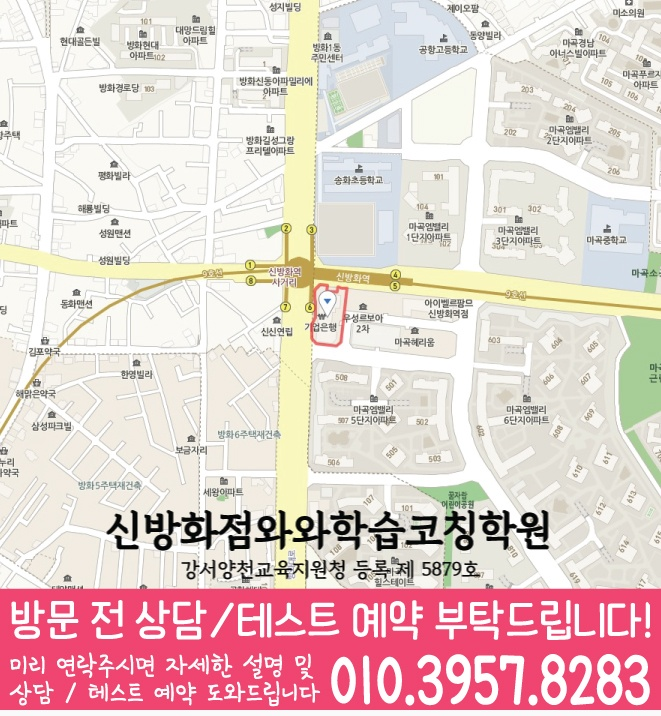

단순 문제풀이보다 진도 상황과 실수 패턴을 먼저 확인해, 부족한 단원과 취약 유형을 우선순위로 정리합니다.
지역별 수강 안내
방화동 고1 영어학원
방문할 지점과 수강 조건
신방화점 수강 정보
- 연결 지점
- 신방화점와와학습코칭학원
- 영어 수강 학년
- 초1~초6 / 중1~중3 / 고1~고3
- 방문 주소
- 서울 강서구 방화대로 294 마곡더블유타워 505
제공된 지점 자료에서 신방화점의 고1 영어 수강 학년을 확인했습니다. 현재 모집과 시간표는 상담에서 확인해 주세요.
서울 강서구 방화동에서 고1 영어학원을 찾는 학생을 위해, 와와학습코칭센터 신방화점은 진단-개념정리-유형학습-오답관리까지 이어지는 학습 흐름으로 내신과 실력 향상을 돕습니다. 영어는 문법·어휘·독해의 연결을 바로 잡고, 수학은 개념과 유형의 빈틈을 찾아 반복 학습으로 완성합니다. 국어·영수 학습도 함께 코칭하여 시간 관리와 공부 습관까지 체계적으로 잡아드립니다.
방화동 고1 수업의 핵심 포인트
영어는 문법 적용과 독해 흐름을 잡고, 수학은 개념→유형→오답의 순서로 학습 효율을 높입니다.
영어·수학에만 집중하지 않도록 국어와 영수 학습 루틴을 함께 점검해 주간 계획대로 성과가 나게 만듭니다.
선생님 특징
왜 틀리는지 문장과 계산 과정까지 함께 보며, 고1 수준에서 바로 적용 가능한 개념 연결을 만들어 드립니다.
오답을 다시 푸는 데서 끝내지 않고, 같은 유형에서 반복되지 않도록 원인·처리 기준·다음 전략을 정리합니다.
숙제·복습·문제량 관리 기준을 제시해 수업이 일회성으로 끝나지 않고 꾸준히 성적이 오르게 돕습니다.
수업 진행방식
1. 현재 수준 확인
고1 영어·수학의 단원별 이해도, 학교 진도, 최근 시험에서 자주 나오는 실수 유형을 체크합니다.
2. 개념 정리와 유형 학습
영어는 문법 포인트와 독해에서의 적용을 먼저 정리하고, 수학은 기본 개념을 탄탄히 한 뒤 유형을 단계적으로 풉니다.
3. 오답 관리와 학습 피드백
오답 노트를 ‘이유’ 중심으로 재구성해 다음에 같은 실수를 막고, 다음 학습 계획까지 함께 조정합니다.
고1 학습 전략(영어·수학 중심)
영어(문법·어휘·독해)
- 문법은 규칙 암기가 아니라 문장에서의 쓰임으로 이해합니다.
- 어휘는 빈출·유사어 중심으로 확장해 독해 속도를 올립니다.
- 독해는 문장 해석 흐름과 문제 유형(주제/세부/추론)을 함께 훈련합니다.
수학(개념·유형·오답)
- 개념이 흔들리는 단원은 예제→문제→확인 순서로 빈틈을 메웁니다.
- 유형은 쉬운 것부터 단계적으로 늘려 실전 감각을 만듭니다.
- 오답은 실수 원인을 분류해 같은 실수가 반복되지 않게 관리합니다.
내신 대비 운영
- 학교 범위와 출제 스타일에 맞춰 복습 타이밍을 조절합니다.
- 시험 전에는 시간 내 풀이, 실수 유형 우선 점검으로 완성도를 높입니다.
- 국어·영수도 함께 관리해 한 주 학습량이 무너지지 않도록 돕습니다.
시간 관리와 학습 루틴
- 매일/매주 할 일의 기준을 만들어 공부가 ‘계획대로’ 진행되게 합니다.
- 숙제·복습·오답 정리 시간을 정해 누적 실수를 줄입니다.
- 상담을 통해 다음 목표를 구체화하고 학습 동기를 유지합니다.
서울 강서구 방화동의 고1 학생이라면, 와와학습코칭센터 신방화점에서 영어·수학을 진단 기반으로 체계적으로 시작해 보세요. 상담을 통해 현재 수준과 목표를 확인하고, 내신과 실력 향상에 맞춘 학습 방향을 자세히 안내드립니다.
센터 위치 안내
주소
서울 강서구 방화대로 294 마곡더블유타워 505
오시는 길
신방화역 6번 출구에서 나오면 바로 왼쪽 마곡더블유타워에 있습니다.
상담에 참고할 학교 목록
학교별 내신 수업과 수강 가능 여부는 센터에 확인해 주세요.
초등학교
서울개화초등학교
서울공항초등학교
서울방화초등학교
서울삼정초등학교
서울송화초등학교
서울정곡초등학교
중학교
공항중학교
방원중학교
방화중학교
삼정중학교
송정중학교
고등학교
공항고등학교
서울디지털콘텐츠고등학교
서울백영고등학교
한서고등학교
과목별 수강 가능 학년
국어
수강 가능 학년은 센터에 문의해 주세요.
영어
초1
초2
초3
초4
초5
초6
중1
중2
중3
고1
고2
고3
수학
초1
초2
초3
초4
초5
초6
중1
중2
중3
고1
고2
고3
과학
수강 가능 학년은 센터에 문의해 주세요.
사회
초1
초2
초3
초4
초5
초6
중1
중2
중3
고1
고2
고3
학원 등록 정보
교육비 참고와 확인할 조건
신방화점 수업료 안내
| 대상 | 과목·과정 | 수업 구성 | 안내 금액 |
|---|---|---|---|
| 중등 | 영어·수학·사회 안내 | 주 3회 100분, 와와 3타임 + 공부9도 1타임 | 247,000원 |
| 고등 | 영어·수학·사회 안내 | 주 3회 100분, 와와 3타임 + 공부9도 1타임 | 280,000원 |
센터 안내 자료에 기재된 금액입니다. 수강 가능 학년, 과목, 수업 시간과 추가 프로그램에 따라 달라질 수 있으므로 최종 교습비는 센터에 확인해 주세요.
고1 영어 상담부터 오답관리까지 이어지는 흐름
고1 영어는 문법, 독해, 어휘, 학교별 내신 지문 관리가 함께 필요합니다. 상담에서는 현재 점수보다 어떤 부분에서 시간이 오래 걸리고 반복 실수가 생기는지 먼저 확인합니다.
현재 수준 확인
학교 진도, 최근 영어 시험 결과, 어려운 문법 단원, 독해 속도와 어휘 암기 습관을 확인합니다.
문법·독해 진단
문장 구조 이해, 구문 해석, 지문 근거 찾기, 선택지 판단 과정을 나누어 약점을 진단합니다.
플래너 실행 점검
어휘 암기, 지문 복습, 문법 적용 문제, 오답 재풀이를 주간 계획으로 나누고 실행 여부를 확인합니다.
오답 원인 분석
틀린 문제를 어휘 부족, 해석 오류, 문법 혼동, 근거 누락으로 분류해 다음 수업과 복습에 연결합니다.
CONSULTING CHECKLIST
방화동 고1 영어학원 상담 전 체크리스트
실제 상담 전 아래 항목을 확인하면 학생에게 필요한 영어·수학 학습 방향을 더 빠르게 정리할 수 있습니다.
- 현재 교재사용 중인 교재와 진도를 확인합니다.
- 최근 시험지점수보다 반복되는 오답 유형을 확인합니다.
- 공부 시간평소 공부 시간과 숙제 수행 정도를 봅니다.
- 상담 목표성적, 습관, 오답, 시험 대비 중 우선순위를 정합니다.
STUDY GUIDE
방화동 고1 영어 학원 학습관리 포인트
방화동 고1 영어 학원을 찾는 학생이라면 고1 과정에서 필요한 영어 학습 목표를 먼저 정리하는 것이 좋습니다. 현재 학교 진도와 최근 시험 결과, 숙제 수행 습관을 함께 보면 상담 방향이 훨씬 구체적입니다.
시험 직전에 한꺼번에 외우기보다 지문별 핵심 어휘와 표현을 주간 단위로 누적 관리합니다.
감으로 해석하지 않고 주어·동사·수식어 구조를 표시해 독해 근거를 남기는 습관을 만듭니다.
본문 암기에서 끝내지 않고 빈칸, 순서, 어법, 서술형으로 바뀔 수 있는 문장을 따로 정리합니다.
서울 강서구 방화동 상담 전 체크
최근 시험지, 학교 진도, 어려운 단원, 숙제 수행 정도를 함께 정리해두면 상담에서 학생에게 필요한 학습 순서를 더 빠르게 잡을 수 있습니다.
함께 보면 좋은 학습가이드
현재 페이지의 학년·과목과 연결되는 정보성 콘텐츠입니다. 지역 페이지와 함께 읽으면 상담 준비와 학습 계획을 더 구체화할 수 있습니다.
방화동 관련 학원 페이지
현재 보고 있는 지역 안에서 센터 안내와 학년·과목별 상세 페이지로 바로 이동할 수 있습니다.
방화동 고1 영어학원 상담이 필요하신가요?
고1 영어의 현재 문법 이해도, 독해 속도, 어휘 습관, 내신 대비 계획을 정리해 상담문의로 남겨주시면 학습 방향을 더 구체적으로 확인할 수 있습니다.
상담문의LOCAL DETAIL LINKS
방화동 관련 학습 페이지 바로가기
같은 동네 안에서 함께 보면 좋은 학년·과목별 학습 안내 페이지를 정리했습니다.
동네 학원
방화동학원 영어수학 전문학원
같은 동네의 기본 영어수학 학원 안내로 이동합니다.
연관 과정 방화동 고1 수학학원같은 동네의 다른 학년·과목 안내도 함께 확인할 수 있습니다.
연관 과정 방화동 고2 수학학원같은 동네의 다른 학년·과목 안내도 함께 확인할 수 있습니다.
연관 과정 방화동 고2 영어학원같은 동네의 다른 학년·과목 안내도 함께 확인할 수 있습니다.
연관 과정 방화동 중2 수학학원같은 동네의 다른 학년·과목 안내도 함께 확인할 수 있습니다.
연관 과정 방화동 중2 영어학원같은 동네의 다른 학년·과목 안내도 함께 확인할 수 있습니다.
연관 과정 방화동 중3 수학학원같은 동네의 다른 학년·과목 안내도 함께 확인할 수 있습니다.
연관 과정 방화동 중3 영어학원같은 동네의 다른 학년·과목 안내도 함께 확인할 수 있습니다.
수강 전에 자주 묻는 질문
방화동에 있는 별도 지점인가요?
이 동네 안내에서 연결되는 곳은 신방화점와와학습코칭학원입니다. 실제 방문 주소는 서울 강서구 방화대로 294 마곡더블유타워 505입니다.
고1 영어을 수강할 수 있나요?
제공된 지점 자료에서 신방화점의 고1 영어 수강 학년을 확인했습니다. 현재 모집과 시간표는 상담에서 확인해 주세요.
교육비 표의 금액으로 바로 등록할 수 있나요?
지역 공통 참고표는 개별 지점의 확정 교습비가 아닙니다. 교습비 안내 자료에서 과목당 금액과 수업 시간·횟수·교재비를 확인하고 최종 비용을 상담에서 확인하세요.
학습코칭 안내 이미지와 위치 지도 보기



안내 자료 대조: . 현재 모집·시간표·최종 비용은 지점에서 확인해 주세요.